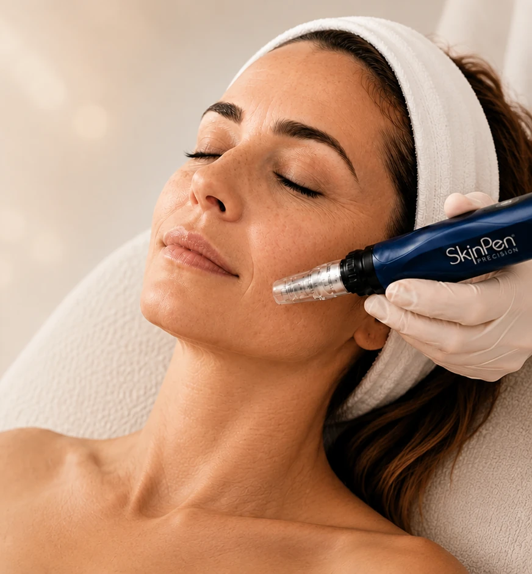
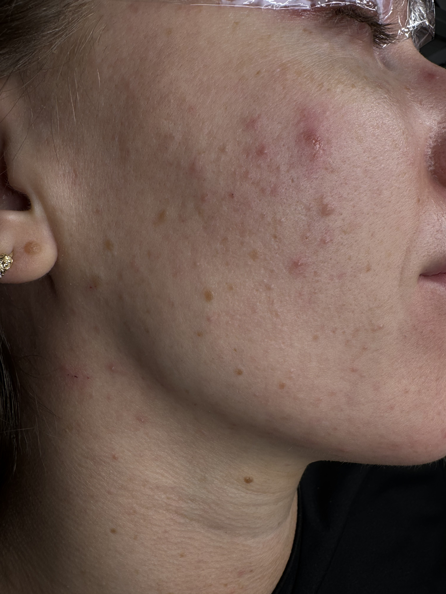
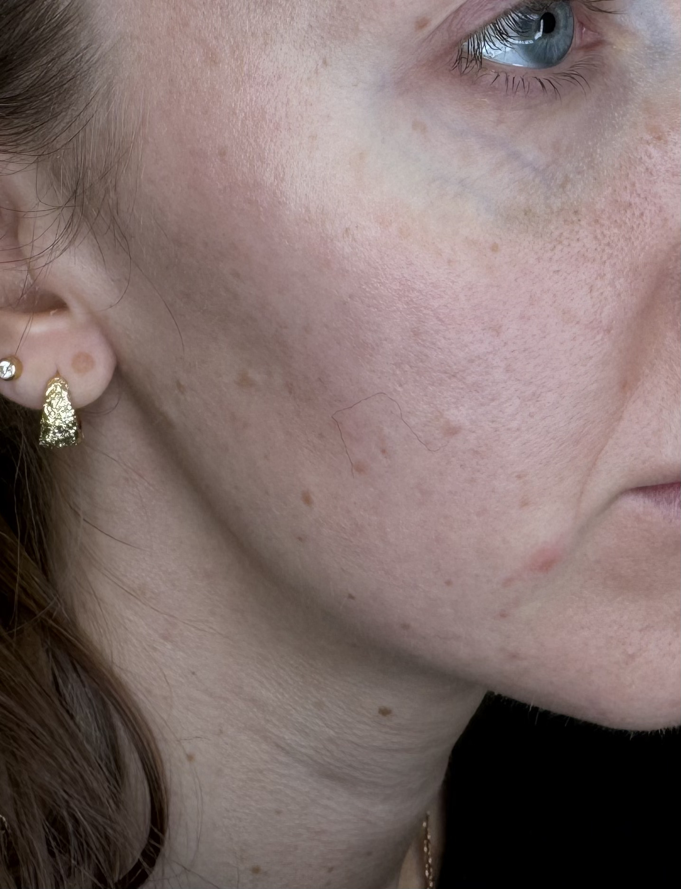
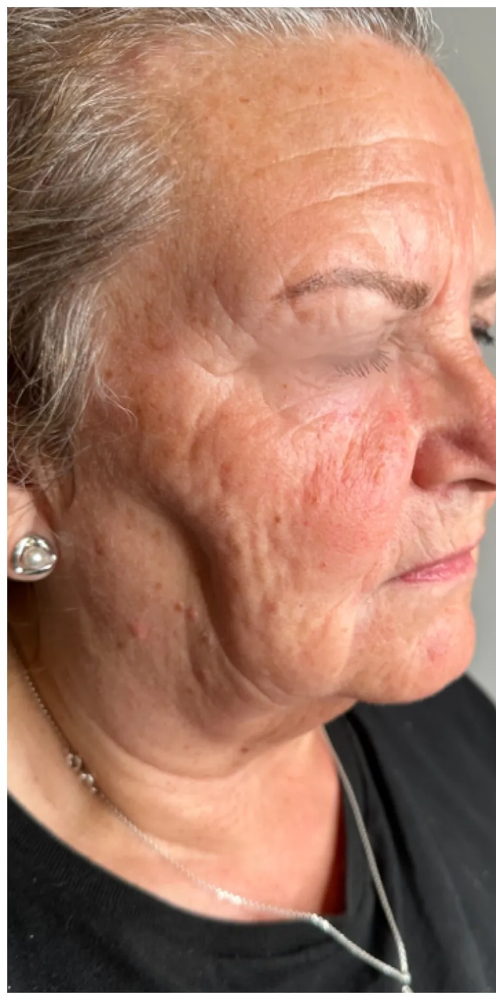
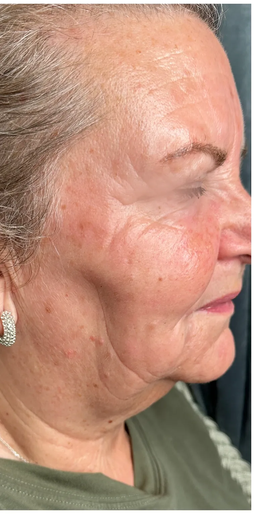
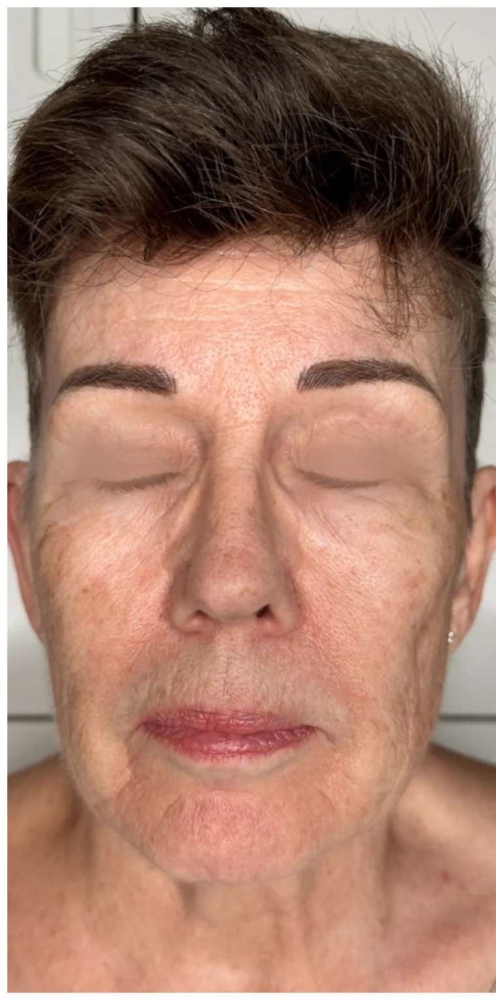
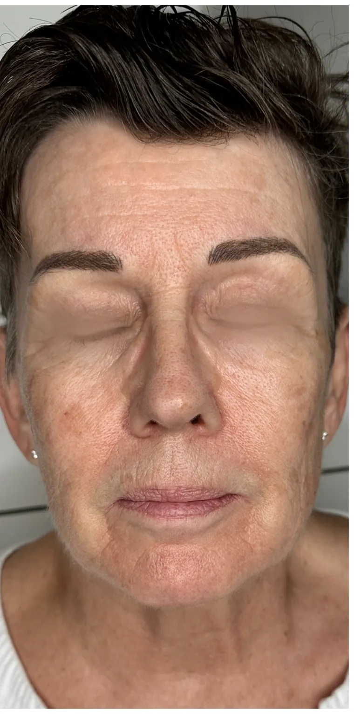
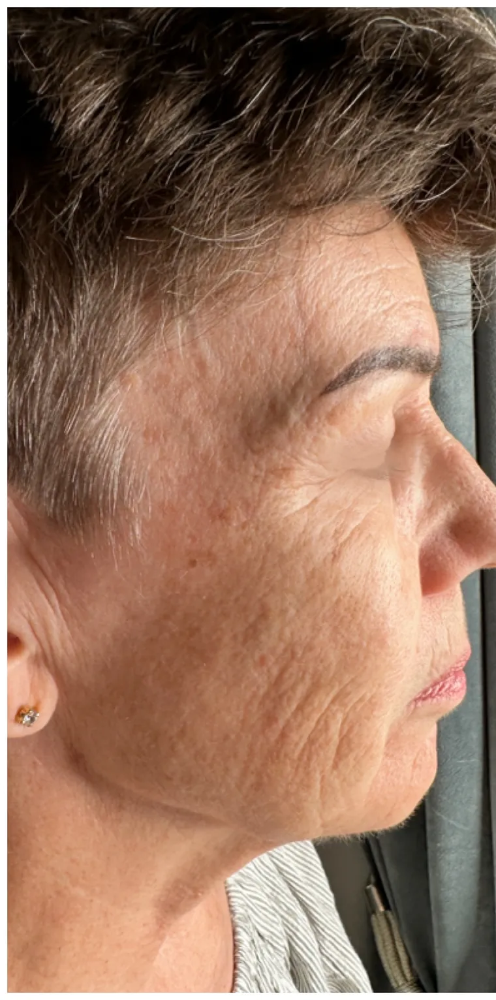
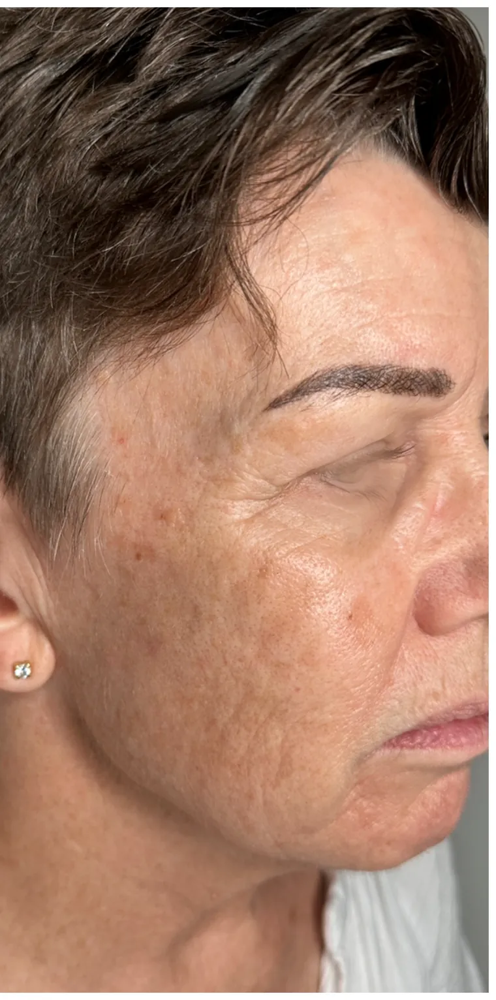
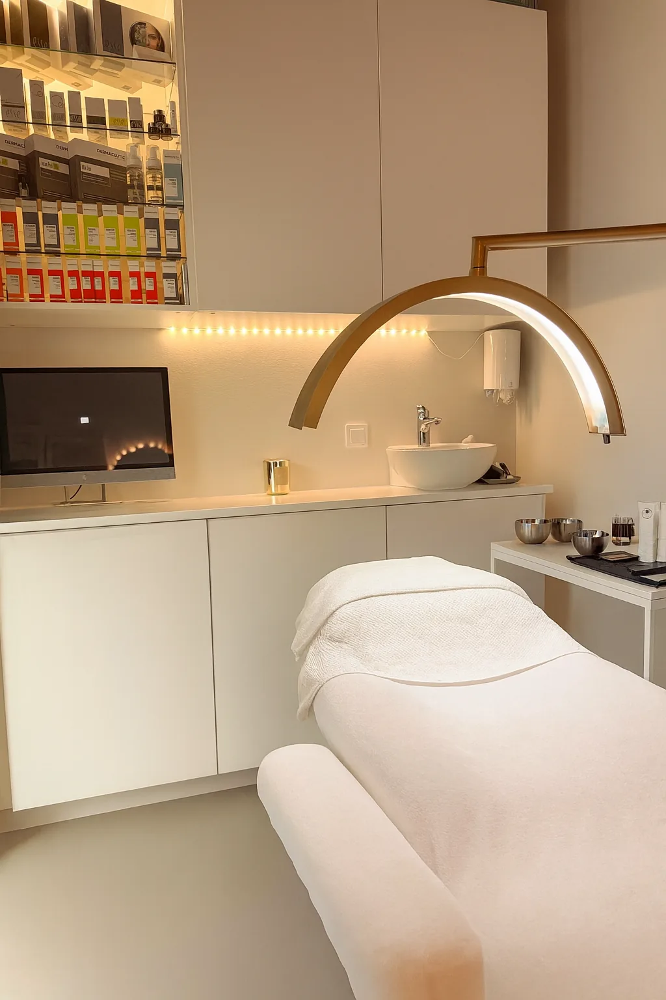

När började fina linjer, porer och trött hud synas så mycket?
Fina linjer. Synligare porer. En hud som känns mindre spänstig och inte riktigt lika fräsch som tidigare.
Och halsen och dekolletaget?
De är ofta det första som avslöjar att huden förändrats.
Premium Microneedling 80 min
med hals + dekolletage inkluderat
Värde 1 000 kr
Under hela din SkinPen-kur
Missa inte erbjudandet – boka din tid nu!
Ansikte + hals + dekolletage
2 795 kr
Se vad en SkinPen-kur kan göra för huden
Fina linjer, ojämn hudstruktur, synligare porer och en hud som känns tröttare kan förändras med rätt behandlingsupplägg.

Före
Efter
Före
Efter
Före
Efter
Före
EfterFör en komplett hudföryngring
Ansikte, hals och dekolletage – hela området får samma genomtänkta behandlingsupplägg.
Ansikte + hals + dekolletage
Premium Microneedling 80 min – med hals och dekolletage inkluderat vid varje behandling under hela kuren.
Hals + dekolletage ingårVärde 1 000 kr per behandling
Varför SkinPen®?
Microneedling med medicinteknisk precision.
Kontrollerad precision
SkinPen® arbetar med justerbart nåldjup som kan anpassas efter hudområde och behandlingsmål.
Sterila engångskassetter
Varje behandling utförs med en ny steril engångskassett.
Individuellt behandlingsupplägg
Nåldjup och behandling anpassas efter din hud och det vi vill behandla.
Varför spelar det någon roll?
Microneedling handlar inte bara om att skapa mikroskopiska nålkanaler i huden. Resultatet påverkas av hur behandlingen utförs, vilket nåldjup som används och hur huden behandlas före, under och efter microneedlingen.
Det är fortfarande microneedling – men med ett mer kontrollerat och genomtänkt behandlingssystem.
Förbättra huden idag – bevara resultatet över tid.
Microneedling är inte bara en behandling för att förebygga hudens åldrande. Det är en behandling som kan förbättra hudens kvalitet när fina linjer, ojämn struktur, minskad spänst och andra ålderstecken redan har börjat synas.
Vi ser microneedling som en långsiktig investering i huden. När du har arbetat upp en bättre hudkvalitet kan återkommande behandlingar vara ett sätt att fortsätta stimulera huden och bevara resultatet över tid.
Du behöver inte vänta tills huden har förändrats – men det är aldrig för sent att börja förbättra den.
Botox och fillers kan förändra ansiktets linjer och volym. Microneedling arbetar med hudens kvalitet.
Därför ser vi microneedling som en annan del av den långsiktiga strategin – inte istället för andra estetiska behandlingar, utan som behandlingen som fokuserar på själva huden.
En komplett behandling – inte bara själva microneedlingen.
Premium SkinPen är utvecklad som ett komplett behandlingsupplägg för hudföryngring.
Här stannar behandlingen inte vid själva microneedlingen. Vi arbetar med huden som vid en professionell ansiktsbehandling – från rengöring och förberedelse till aktiva ingredienser, microneedling, mask, LED/rödljus och eftervård.
80 min
Ansikte + hals + dekolletage
Det betyder att du får tid för hela protokollet – inte bara själva microneedlingen.
Vanlig microneedling
Själva microneedlingen står i centrum.
Premium SkinPen
Ett komplett behandlingsprotokoll där varje steg är en del av behandlingen.
Det är fortfarande microneedling – men vi har byggt ett helt behandlingsupplägg runt den.
Vi behandlar inte bara huden med microneedling. Vi förbereder, behandlar, lugnar och återställer den.
Ett komplett, professionellt behandlingsprotokoll
Varje SkinPen Premium-behandling följer samma genomtänkta upplägg – steg för steg.
-
1
Dubbelrengöring + ånga
Huden rengörs noggrant i två steg under ånga för att avlägsna orenheter och förbereda huden inför behandlingen.
-
2
Kemisk peeling med AHA-syra
En AHA-syra appliceras på behandlingsområdet för att förbereda huden inför microneedlingen.
-
3
SkinPen® microneedling
Kontrollerad microneedling enligt SkinPen®-protokoll, med individuellt anpassat nåldjup efter hudområde och behandlingsmål.
-
4
Regenererande polynukleotider
Polynukleotider baserade på renat lax-DNA microneedlas in i huden som en del av behandlingen.
-
5
Bio-cellulosemask + LED/rödljus
En bio-cellulosemask specifikt framtagen för efter microneedling appliceras för att lugna huden, följt av förlängd LED/rödljusbehandling.
-
6
Barriärkräm och eftervård
SkinFuse Rescue Calming Complex medföljer hem efter behandlingen, tillsammans med professionella rekommendationer för dagarna efter.
En komplett SkinPen-kur
4–6 veckor
mellan varje behandling i kuren.
Vi planerar tillsammans
Efter första behandlingen bokar vi nästa tid tillsammans.
Ansikte + hals + dekolletage
Ingår vid varje behandling i kuren – inte bara vid första tillfället.
För hudföryngring rekommenderar vi vanligtvis en kur på 4 behandlingar, med 4–6 veckors mellanrum.
Om vi arbetar mer intensivt med exempelvis akneärr kan det behövas upp till 6 behandlingar.
Vill du arbeta långsiktigt med hudkvalitet kan du göra en kur under vinterhalvåret. För dig som vill arbeta mer intensivt med fasthet och hudkvalitet kan vi lägga upp två kurer – en på hösten och en på våren, med 4 behandlingar per kur.
Detta är ett intensivt upplägg och för de flesta räcker en kur för att ge huden en rejäl investering i kvalitet.
Missa inte erbjudandet – boka din tid nu!
- Ansikte + hals + dekolletage ingår
- Kemisk peeling, regenererande cocktail, bio-cellulose mask och LED-ljusterapi
- 2 795 kr
Ingen betalning online · Inga förpliktelser · Gå vidare till bokning efter formuläret
Medicinteknisk precision för din hud
Avancerad microneedlingteknologi
Kontrollerad, individuellt anpassad behandling
Stimulerar hudens naturliga reparationsprocess
Kollagenstimulering för fastare hud
Förbättrad hudstruktur och färre fina linjer
Jämnare hud vid ojämn struktur och akneärr
Din behandlare Isabella
SkinPen Premium utförs av Isabella, CIDESCO-certifierad hudterapeut med lång erfarenhet av estetiska behandlingar.
Det säger våra kunder
Över 600 kunder har lämnat sitt omdöme om oss.
4,9/5 · 600+ omdömen
★★★★★”Isabella genomförde en microneedling-kur på 4 behandlingar. Huden känns fastare, fylligare och jag upplever mindre synliga rynkor. Väldigt nöjd och kommer definitivt tillbaka!”
★★★★★”Isa var professionell och trevlig – fick en så fin lyster i huden efter behandlingen. Skulle definitivt komma tillbaka.”
★★★★★”Isabella känns rak, tydlig och effektiv. Kunnig på sitt område. Stort plus att hon var ärlig om biverkningar och återhämtning i förväg, vilket många 'glömmer' – så man vet att behandlingen passar i tid. Kommer gärna tillbaka.”
★★★★★”Isa är bäst! Förutom att hon är supertrevlig så är hon professionell uti fingerspetsarna. Det arbete hon gjort är overkligt bra. Rekommenderar Isa mycket varmt!”
★★★★★”Isabella är världsklass terapeut. Hon är lugn harmonisk och fantastiskt duktigt. Varmt rekommenderar.”
★★★★★”Fantastiskt bemötande och mycket professionell behandling. Jag kände mig trygg och är supernöjd med resultatet. Rekommenderas varmt!”
Frågor & svar
Behandlingen omfattar ansikte, hals och dekolletage för 2 795 kr. Protokollet innehåller rengöring, kemisk peeling, SkinPen®-microneedling med anpassat nåldjup, regenererande cocktail (polynukleotider + hyaluronsyra), bio-cellulose mask och förlängd LED/rödljusterapi. Skinfuse Rescue Calming Complex medföljer hem efter behandlingen.
Ansikte, hals och dekolletage ingår vid varje behandling i din SkinPen-kur – inte bara vid det första tillfället. Efter din första behandling planerar och bokar vi nästa tid tillsammans, med cirka 4–6 veckors mellanrum.
För hudföryngring rekommenderar vi vanligtvis en kur på 4 behandlingar med 4–6 veckors mellanrum. Det ger huden möjlighet att successivt bygga upp ett jämnare, fastare och mer vitalt utseende.
Vill du arbeta med hudkvaliteten som en återkommande investering kan du göra en kur under vinterhalvåret. För dig som vill arbeta mer intensivt med hudens kvalitet och uppstramning kan vi istället lägga upp två behandlingsomgångar per år – en på hösten och en på våren.
Det behövs alltså inte behandling året runt. En välplanerad kur räcker.
Vid behandling av ärr efter acne kan det behövas upp till 6 behandlingar, beroende på utgångsläge och behandlingsmål.
De flesta upplever en lätt stickande känsla, men behandlingen är väl tolererad. Vi anpassar nåldjupet efter din komfortnivå och kan applicera bedövningskräm vid behov (ingår inte i priset).
Huden kan vara röd och lätt svullen i 1–3 dagar efter behandlingen.
Resultatet utvecklas successivt och slutresultatet syns vanligtvis efter 2–4 veckor.
Du som vill arbeta intensivt med hudstruktur, akneärr, fina linjer och hudförnyelse, och som vill maximera kollagenstimulering och lyster. Ej lämplig vid aktiv akne, eksem eller rosacea i behandlingsområdet, graviditet eller amning, pågående Accutane/isotretinoin-medicinering, blodförtunnande medicin, aktiv herpes simplex (meddela oss i förväg) eller nyligen utförd laserbehandling/kemisk peeling. Vid osäkerhet bedömer vi din hud innan behandling.
Mitt i Stockholm City
📍 Your Skin Clinic
Gallerian, Stockholm City
Hamngatan 37, 111 53 Stockholm

Ansikte + hals + dekolletage
2 795 kr
Hals & dekolletage ingår – vid varje behandling i din kur.